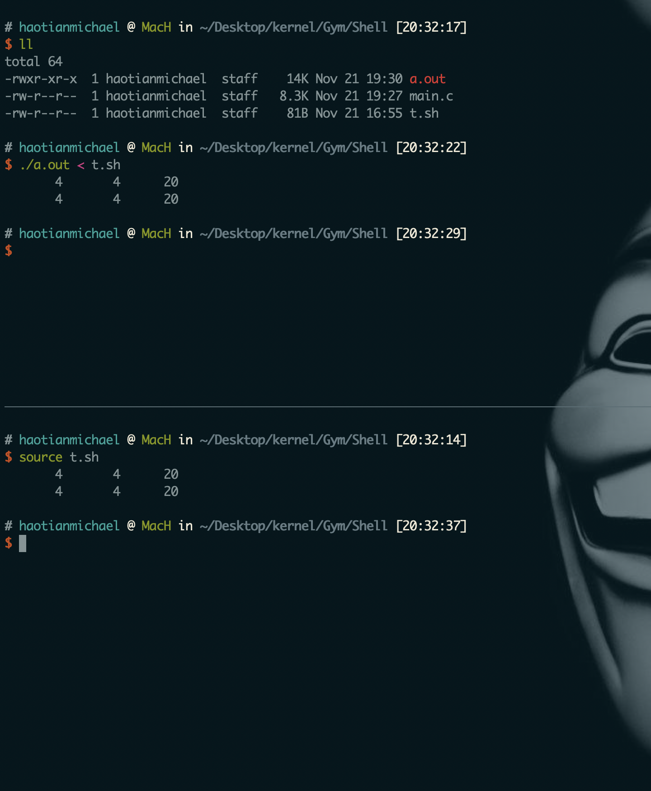

HW:Shell
Abstract
6.828除了Lab之外还有针对小型操作系统XV-6的Readings和HomeWork。整个6.828也是围绕这两条线（Lab和HW）在走。Lab1让我适应了JOS的实验环境和调试技巧，但是Shell和System Calls才是真正属于操作系统的知识。关于XV-6的HomeWork都是建立在Readings基础之上的，本次HW需要实现一个小型的Shell，需要阅读的Readings有:
- XV-6.Chapter.0（重点资料）
- man fork, (3)exec，open， close
- TCPL
学习过程中最有意思的当属斩获新技能和新工具了:)介绍一个新的vim插件神器————Taglist。
简单来讲，它以目录树的形式列出当前文件中的symbol:函数名，宏定义和变量。帮助我们从宏观上快速了解源码。本身支持跳转。安装manual中讲的很清楚，就不再赘述了。下面是我的配置:
2
3
4
5
6
7
let Tlist_Show_One_File=0
let Tlist_Exit_OnlyWindow=1
let Tlist_Use_Left_Window=1
let Tlist_File_Fold_Auto_Close=1
add the above Configs to your ~/.vimrc
操作系统调用——System Calls
操作系统的工作总结起来就是抽象和资源分配。
资源有内存分配，CPU调度等。而抽象指的就是系统调用。实验需要实现Shell中的命令，重定向和管道。每一个功能都是使用系统调用来实现的，所以将System Calls称为操作系统的接口一点都不过分。
Executing Simple Commands
fork
fork系统调用创建一个子进程，对于父进程返回子进程的pid，对于子进程返回0。见下面代码:
2
3
4
5
6
7
8
9
10
11
if(pid == 0) { //父子进程都从这里开始执行，唯一区别就是pid不一样
printf("child: existing!\n");
exit();
}else if(pid > 0) {
printf("parent: %d", pid);
wait(); //父进程等待
printf("child is done\n");
}else {
fprintf(stdeer, "fork error!\n");
}
其中
wait()系统调用返回一个退出的子进程。上面这段代码其实就是整个Shell执行指令的原理:Shell提示符由父进程提供，然后创建一个子进程执行真正的命令，而父进程则wait()直到子进程返回,然后父进程等待下一条命令。
执行效果如下:

回到Shell中来，我们需要修改子进程中的代码，能够正确执行简单的命令。涉及到
exec()函数族。
exec
exec提供了在一个进程中执行另一个进程的方法: 根据参数提供的文件路径和名称找到可执行文件，并执行。执行结束之后原调用进程的内容除进程号之外其他的全部被替换。通常和fork一起联合实现进程中执行程序。
exec函数族是由6个以exec开头的函数构成的，这6个函数的用法根据名称的不同会有些微的区别:
查找可执行文件的方式
其中
execlp，execvp在查找可执行文件的时候不用写文件的绝对路径，系统会自动根据环境变量“$PATH”查找。env命令可以列出系统中当前的$PATH。
参数传递方式
其中
execlp,execl,execle这三个第五个字母是l的函数参数只能分别列出来————const char *argv...。而execv,execve,execvp这三个第五个字母是v的函数参数可以整体构造数组传递————char *const argv[]。所有的参数都应该以NULL结尾。
环境变量
其中
execle和execle可以在使用指定的环境变量。通过在参数末尾加上char *const envp[]的方法。
总结见下图:
exec函数族使用注意事项
- 因为exec函数经常调用失败，所以需要加上判断语句
- 最后参数一定用
NULL结尾1
2
3
4
5
6
7int exec() {
int ret;
if( fork() == 0 ){
if((ret = execlp("ls", "ls", "-al", NULL)) < 0) //参数以NULL结束
fprintf(stderror, "execlp error!\n");
}
}
实现命令
Shell代码分为两个部分:词法分析和命令执行；
实验需要修改runcmd()函数代码，实现具体的EXEC。需要关注函数类型，参数两个细节。根据调试知道' '为EXEC，而execcmd结构体中argv[0]中存储的是命令的名称，所以我们使用execvp来实现，execvp函数的第一个参数是可执行文件的名称，往后的参数可以用数组表示，这样可以保证该命令的可变参数得到实现。代码如下:
1 | case ' ': |
注意因为是多线程编程，所以调试的时候会出现很多不可思议的现象。可以先将fork()部分注释掉，进入执行函数看一下现象，然后输出调试。执行效果如下:

I/O Redirection
文件描述符
文件描述符是很重要的概念，它使得重定向成为可能。
File Descriptor是一个整数，常常把其指向的对象称为文件。本实验中需要了解open，creat，close，dup2等系统调用返回值就是一个文件描述符。我们需要做的就是将Shell本身的文件描述符指向其他的文件描述符，从而实现重定向。Shell保证在任何时候都有3个打开的文件描述符————0-标准输入,1-标准输出,2-错误输出。
下面是会用到的几个系统调用:
open("file_name", O_RDWR):打开文件，打开成功返回值最小的文件描述符————标准输入0，打开失败返回-1create("file_name", 0777):创建文件，返回值同openclose(fd):释放一个文件描述符dup2(oldfd, newfd):将oldfd复制给newfd
重定向不需要考虑子进程的问题，但还是需要深入了解
fork函数的机理，一旦fork，父进程拥有和子进程一模一样的文件描述符。而重定向需要考虑的是在子进程中将标准输入（输出）定向到其他文件即可。
< 输入重定向
较简单，一旦文件不存在直接报错:
2
3
4
5
6
7
8
9
10
rcmd = (struct redircmd*)cmd;
close(0);//关掉父进程的标准输入
if(open(rcmd->file, O_RDONLY) < 0) {
fprintf(stderr, "Bash: No such file or directory: %s\n", rcmd->file); //输入不存在直接报错
}else {
//一旦open函数执行成功，它返回得文件描述符就是0，所以这时候该文件就变成了输入,定向成功
runcmd(rcmd->cmd); //这里就是执行EXEC部分，所以fork的时候标准输入也是关闭的（和父进程一样close）
}
break;
> 输出重定向
如果文件不存在。创建新的文件时需要注意文件的权限。
creat函数的参数0777权限为-rwx rwx rwx。关于umask的知识见这里。
2
3
4
5
6
7
8
9
10
11
12
13
14
15
rcmd = (struct redircmd*)cmd;
int fd;
if((fd = open(rcmd->file, O_RDWR)) < 0) { //fd为新打开文件的文件描述符
if((fd = creat(rcmd->file, 0777)) < 0 ) {
fprintf(stderr, "Bash: No such file or directory: %s\n", rcmd->file);
}else {
dup2(fd, 1); //将标准输出指向到新打开的文件fd上，所以输出就到了该文件上（实现了重定向）
runcmd(rcmd->cmd);
}
}else {
dup2(fd, 1);
runcmd(rcmd->cmd);
}
break;
执行效果如下:
Implement pipes
管道是一个小小的内和缓冲区，它以文件描述符对的形式提供给进程，从管道的一端写数据可以从管道的另一端读取。系统调用
pipe将数组int p[2]初始化为管道的文件描述符。接下来做的无非就是重定向了。
2
3
4
5
6
7
8
9
10
11
12
13
14
15
16
pcmd = (struct pipecmd*)cmd;
int p[2];
pipe(p); //管道初始化
if(fork() == 0) {
dup2(p[0], 0); //将标准输入重定向到管道的输入p[0]上
close(p[0]);
close(p[1]);
runcmd(pcmd->right);
}else {
dup2(p[1], 1); //讲标注输出重定向奥管道额输出p[1]上
runcmd(pcmd->left);
close(p[0]);
close(p[1]);
}
break;
执行效果如下:

Make grade
6.828对于HW的测试是直接在主机上测试的，编译Shell文件:
gcc Shell得到a.out。已知该文件t.sh:
2
3
4
5
6
cat < y | sort | uniq | wc > y1
cat y1
rm y1
ls | sort | uniq | wc
rm y
在主机上，执行
./a.out < t.sh与在主机Shell上执行source t.sh对比结果，如下:

本次实验的源代码在Github上。
第一次接触Linux系统编程，很多零碎的知识和细节学起来很是吃力。不过在独立搞懂Shell的机制之后又觉得很爽，还是很期待之后的挑战:)